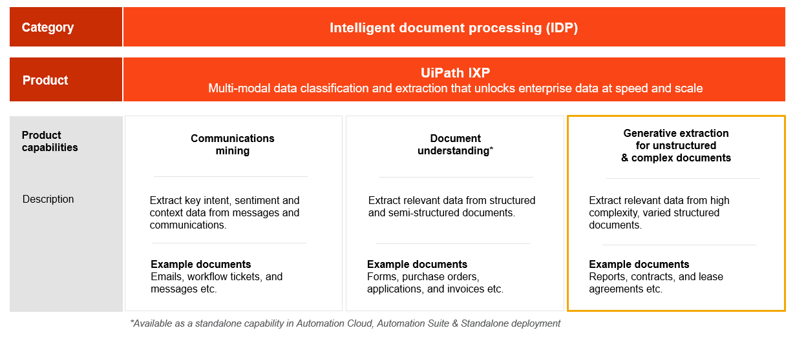

📖 Theory
Module 01
Introduction to IXP
What is IXP? Overview of Document Understanding, generative extraction for complex docs, and Communications Mining. Demos and key concepts.
A self-paced training course covering Document Understanding, IXP for complex unstructured documents, and automation best practices.
Keep going — complete each module to track your journey.
UiPath Intelligent Extraction Processing (IXP) is UiPath's unified platform for intelligent document processing — bringing three powerful capabilities under one roof.
Extract data from structured & semi-structured documents — forms, invoices, receipts, purchase orders.
Generative AI extraction for unstructured & complex documents — contracts, reports, lease agreements.
Extract intent, sentiment & context from emails, tickets, and messages at enterprise scale.

Make sure you have the following before starting the course.
How to connect Studio to Automation Cloud: Open UiPath Studio → Sign In → enter your Automation Cloud tenant URL. Your orchestrator connection will activate your license automatically.
Seven modules taking you from IXP fundamentals to hands-on document automation.